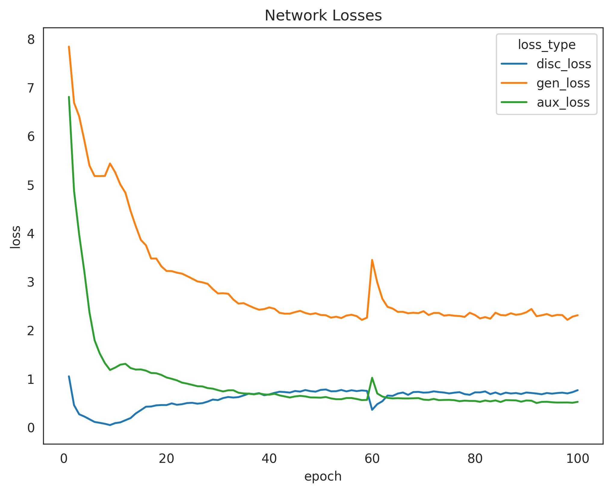
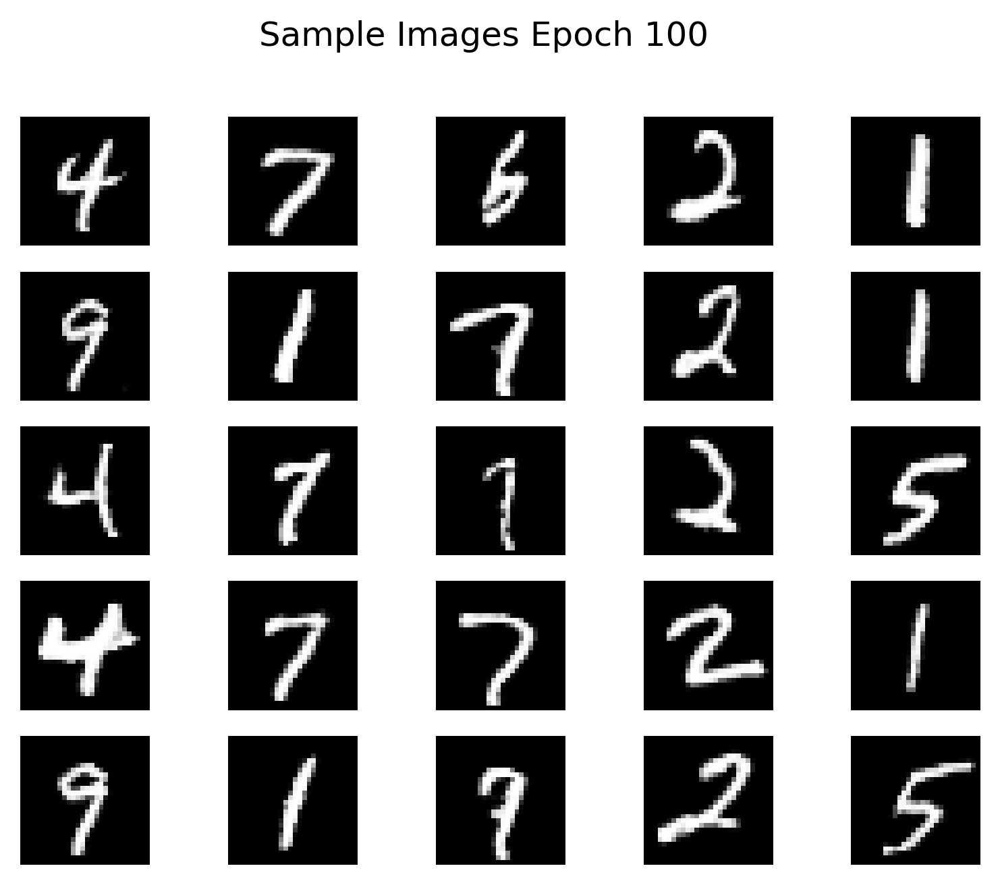
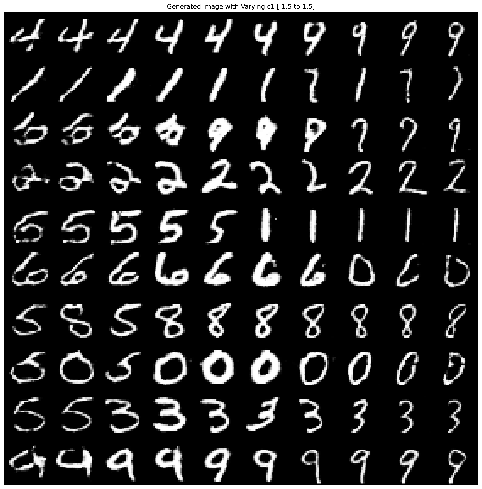
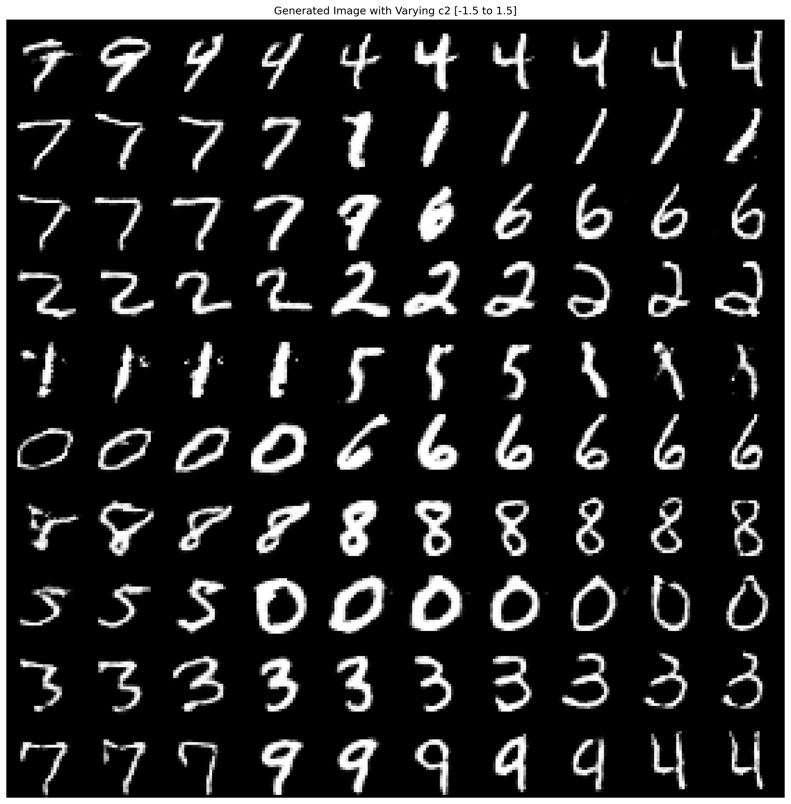

InfoGAN - Study on MNIST Dataset
Project Description
The project aims to reconstruct the Information Maximizing Generative Adversarial Network (InfoGAN) to learn the network capabilities in disentangle complex representations. The networks consist of a generator, discriminator and auxiliary. The generator produces fake image given probability distribution as noise, two continuous latent code and a single categorical code. There are 74 latent codes in total, 62 from noise, 2 from continuous code and 10 from categorical code (since the image classification relates to digits from 0 to 9).
The discriminator selectively chooses images that are real, from training dataset, and fake, from generator. The two networks play a minimax game in which that the generator is trying to fool the discriminator to produce fake images to be labelled real. An additional network is introduced, an auxiliary model, that can provide mutual information loss (minimizing the probability density of continuous codes and binary crossentropy of categorical code). This model is trained and share its loss values with both the generator and discriminator. It is hoped that this network architecture can generate valid images while obtaining specific meaning from the latent codes.
This project is inspired by InfoGAN: Interpretable Representation Learning by Information Maximizing Generative Adversarial Nets.
Project Result
The result of the training can be shown in several ways. The first aspect is the network losses. Both the generator and auxiliary's losses are decreasing in a stable fashion. This is ideal since it is preferred to have lower loss function for the generator to produce 'real' image and for the auxiliary model to produce less mutual info loss. Yet we can see that the discriminator's loss is increasing. Since the discriminator and the generator is playing a minmax game, it is most likely that the decreasing generator loss affects the increasing discriminator loss.

The following figure showcases the number of epochs and the quality of images generated by the generator model.

Now let's take a look at the plots for varying c1 and c2, as well as the varied categorical code.


From the 2 plots above, the categorical code is varied across the column. This can be considered a success that we see different digit in every row. Although it is obvious that the categorical code is learned unsupervised by the model, therefore code 1 does not necessarily correlate to number 1. Also another note, this categorical code isn't perfect in a sense that some of the digits are misclassified.
As for the continuous code, c2 seems to control the thickness of the digit although it is somewhat responsible in the rotation of the image. But this is not as obvious as we can see from c1. Therefore, this can be a point of improvement as to create a network / preprocess the data prior to training so that the c1 and c2 can learn the latent representation of the images better.
Conclusion & Future Improvement
From the project results, it can be concluded that the model performs decently. The categorical code, although not perfect, like any other classifiers out there, is able to categorize the digits from MNIST dataset. Not to mention that the c1 and c2 continuous codes are able to capture the thickness and rotation aspects of the image. A prospect improvement within the model can be the implementation of optimizers, learning rates and batch size as well as the epoch training numbers. In other words, hyperparameters can play a huge factor in improving the model. Another potential improvement can be applied on the network's architecture. The different kind of layers, activation functions and batch normalizations can also be altered to further increase the model's performance.